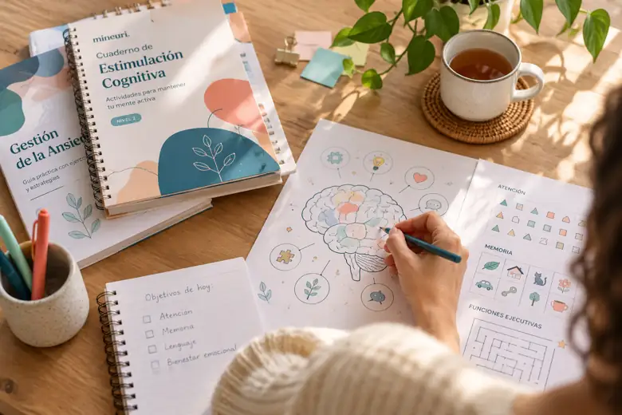

Recursos listos
para usar
Guías, cuadernos y actividades de psicología y neuropsicología para pacientes, familias, profesionales y centros.
Scattergories y Busca las 12 diferencias, dos actividades gratuitas publicadas.

No hay coincidencias
Prueba con otra temática o pulsa «Limpiar filtros» para explorar todo el catálogo.
El catálogo muestra únicamente recursos publicados en Mineuri. Los recursos gratuitos publicados incluyen descarga directa de PDF. Los recursos de pago todavía no tienen compra ni entrega automática.
Explora las colecciones Mineuri
Tres líneas de materiales para aprender, acompañar e intervenir.

Para ti y tu familia
Guías y cuadernos para el bienestar emocional y la vida cotidiana.
Explorar recursos
Intervención psicológica
Ejercicios y materiales para acompañar el trabajo terapéutico.
Ver materiales clínicos
Neuropsicología y memoria
Actividades graduadas de estimulación cognitiva para profesionales.
Explorar cogniciónFotografías de ambiente, no de productos Mineuri. Consulta cada ficha para conocer los materiales y su disponibilidad real.
Dos actividades para poner la mente en marcha.
Explora Scattergories y Busca las 12 diferencias, ambos recursos gratuitos.